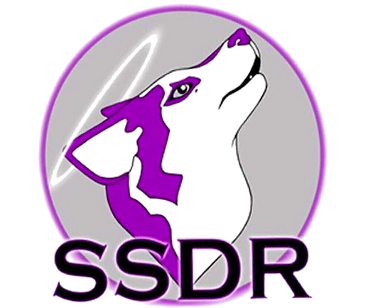

Email: info@saintssleddogrescue.co.uk Phone: 07983 548370

Saints Sled Dog Rescue
Charity in England & Scotland
No. 1179637 & SCO44070
DONATE
Home
Meet Our Dogs
Foster a Dog
Rehome a Dog
Contact SSDR
Events
SSDR Shop